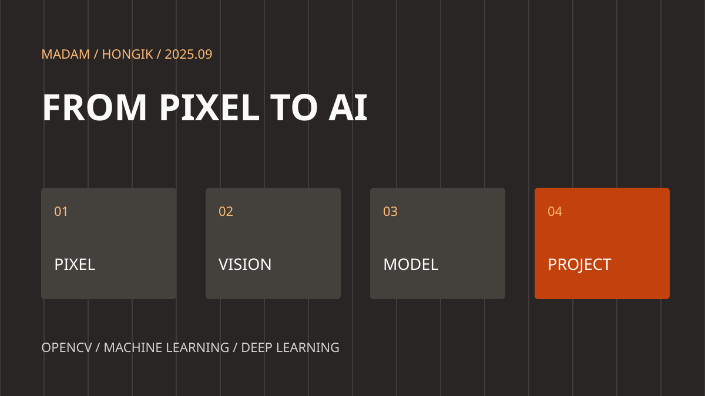

HONGIK / COMPUTER VISION / 2025
이미지에서 시작해,
AI 비전까지
2025년 9월 홍익대 OpenCV 수업 기록. 영상처리 기초에서 객체 검출·얼굴 인식·추적·OCR까지 이어지는 실습.
카메라가 받아들인 장면은 픽셀의 배열입니다. 그 안에서 사람을 찾고, 움직임을 추적하고, 문자의 의미를 꺼내는 기술을 배웠습니다.

09.01–09.04
이미지 한 장에서 시작하는 컴퓨터 비전
WSL2 · NumPy · OpenCV
WSL2와 VS Code, Git으로 실습 환경을 준비하고 NumPy 배열로 이미지를 다뤘습니다. 이미지 저장, 마우스·키보드 입력, 도형과 한글 표시를 익힌 뒤 USB 카메라와 영상 파일을 읽고 저장했습니다.
색공간과 HSV 마스크, 비트 연산, 필터링과 Canny 엣지 검출로 영상에서 필요한 정보를 골라내는 과정을 실습했습니다.
09.05–09.09
검출 결과를 프로그램의 동작으로
ORB · YOLO · Transform
ORB 특징점 매칭과 YOLO 11n 모델 실습을 거쳐 검출 박스, 클래스 이름, 분할 마스크와 자세 키포인트를 코드에서 꺼내 사용했습니다. 아핀·원근 변환과 모폴로지 연산도 함께 다뤘습니다.
버튼·슬라이더·영상 Sprite를 구성하며 각각의 예제를 하나의 화면으로 연결했습니다. 저장소의 project_data/image_project에는 이 흐름을 담은 클래스와 실행 코드가 남아 있습니다.
09.10–09.12
얼굴을 찾고, 특징을 비교하기
YuNet · SFace · Machine Learning
Haar cascade와 YuNet으로 얼굴과 랜드마크를 검출하고, SFace로 얼굴 특징을 비교하는 인식 실습을 진행했습니다. 프로젝트에 인식 기능을 붙이며 처리 속도와 모델의 한계도 살폈습니다.
k-NN, 결정트리, 랜덤 포레스트, Boost, SVM, EM, MLP를 통해 머신러닝의 주요 접근을 비교하고 딥러닝 개념으로 연결했습니다.
09.15–09.17
모델을 연결하고, 영상의 흐름을 읽기
ONNX · ByteTrack · OCR
TensorFlow·PyTorch 모델 저장과 ONNX 변환, R-CNN 계열과 SSD를 다뤘습니다. ViTTrack과 YOLO·ByteTrack 추적, ResNet18 임베딩 기반 재인식 예제로 프레임 사이의 객체를 연결했습니다.
InsightFace 실습에 이어 PPOCR 검출·인식, 번호판 검출, Tesseract와 PaddleOCR 비교, YOLO 학습을 진행했습니다. 단순한 결과 표시에서 응용 기능으로 확장하는 단계입니다.
09.18
각자의 문제를 프로젝트로
주제 선정 · 자료 조사 · 계획서
수업일지의 마지막 기록은 프로젝트 저장소와 발표자료 준비, 주제 선정, 자료 검색과 계획서 작성입니다. 영상처리와 모델 추론을 실제 사용 시나리오 안에 배치하는 작업으로 이어졌습니다.
횡단보도 보행자 인식과 문서 반사광 제거·OCR처럼 서로 다른 문제에 같은 비전 기술을 적용했습니다. 팀별 기술서에 남은 설계와 구현 흐름은 프로젝트 글에서 소개합니다.
다시 따라가는 실습 코드
python 폴더의 영상처리·인식 예제, ml_python의 머신러닝 실습, project_data/image_project의 통합 화면 코드를 함께 살펴볼 수 있습니다. 필요한 모델과 실행 환경은 코드별로 확인해 주세요.
수업 기록과 참고 자료
수업 README의 안내 기간은 9월 2~19일이며 일지는 9월 1~18일을 기록합니다. 2조 기술서의 프로젝트 기간은 9월 18~25일입니다. 서로 다른 기록 범위를 구분해 소개했습니다.